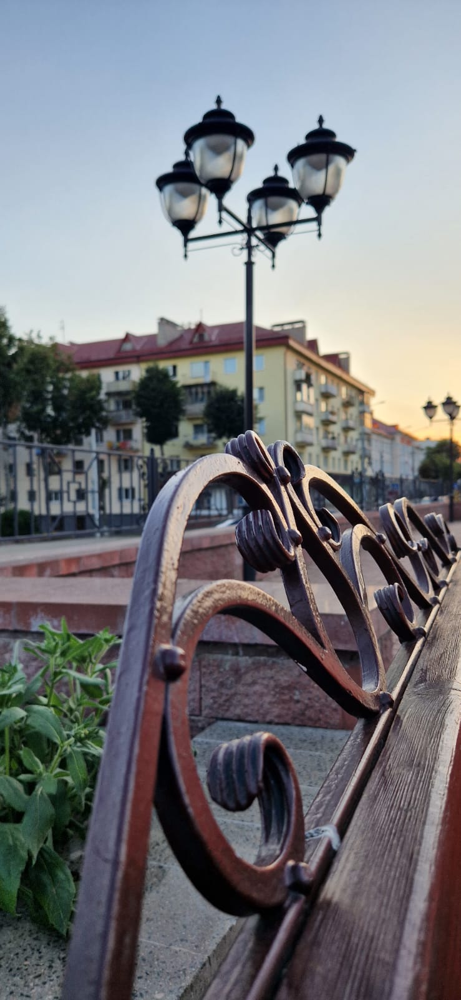
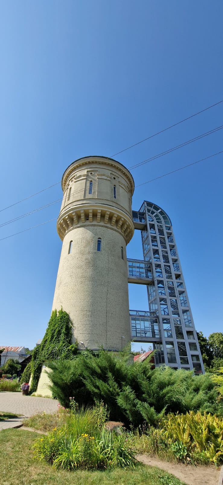

Parks ar fontanu.
Fontanu parks ir viens no populārākajiem parkiem pilsēta ļoti skaisti uzkopts parks kurā bieži notiek dažādi pasākumi. Lieliska vieta kur pastaigāties svaigā gaisā, redzēt dažādus koka un ziedas izstrādājumus un skaistu fontanu. 
Ekskursija pa torni
Tornī apmeklētāji var apmeklet gida pavadībā. Tornī var kāpt ne vairāk kā septiņi cilvēki vienlaikus. Atsevišķās vietās šauras ejas.Skaistās kompozīcijas un daudz vēsture torņa.

- Sestdien no 10:30 līdz 17:30
- Svetdien no 11:30 līdz 18:30
informacija ziemelblazma.riga.lv
Baznīca Svētā Pētra
- Pirmdiena-Piektdiena: 8:00-17:00
- Sestdien-Svetdien: 7:00-18:00